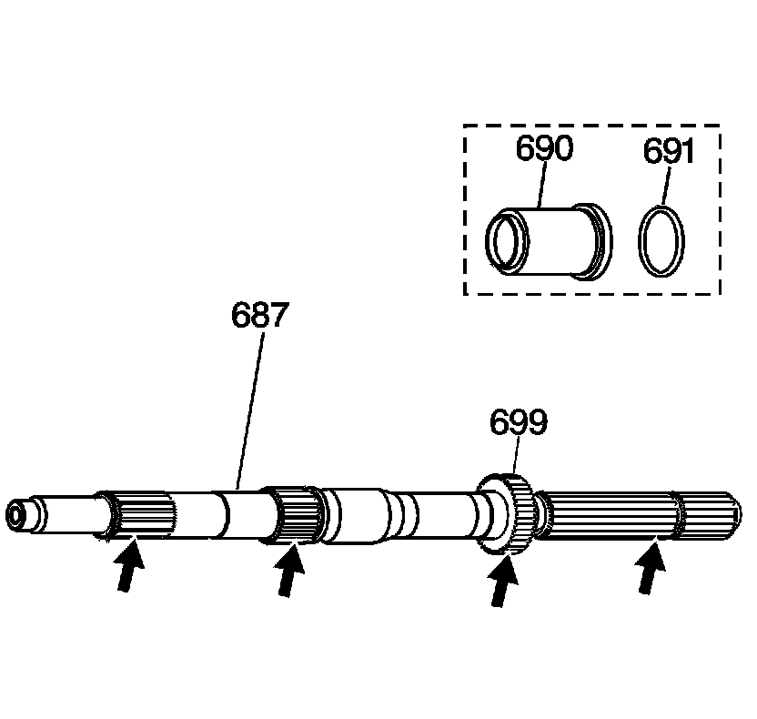
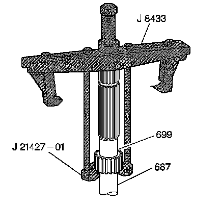
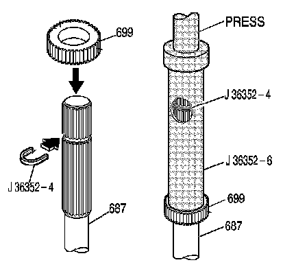

Internal Transmission Speed Sensor Rotor Replacement
Internal Transmission Speed Sensor Rotor Replacement
Tools Required
^ J 8433 Two Jaw Puller
^ J 21427-A Speedometer Gear Puller Adapter
^ J 36352 Speed Sensor Rotor Installer Kit
Removal Procedure

1. Inspect the internal transmission speed sensor rotor (699) for cracks or damaged teeth.
2. Inspect all splines on the output shaft (687) for cracks or damaged splines.
3. Remove the output shaft seal (691) and the output shaft sleeve (690) (model dependent) 2WD units only.

4. If the internal speed sensor rotor (699) is damaged, replace it.
5. Using J 8433 with J 21427-01, remove the internal speed sensor rotor (699) from the output shaft (687).
Installation Procedure

Important: Do not re-use an internal speed sensor rotor that has been removed.
1. Slip a new internal speed sensor rotor (699) over the output shaft splines.
2. Install the J 36352-4 in the groove on the output shaft (687).
3. Place the J 36352-6 on the output shaft (687). Press on the J 36352-6 until it contacts the J 36352-4 in the window (the J 36352-4 will be a positive stop for the J 36352-6 ).